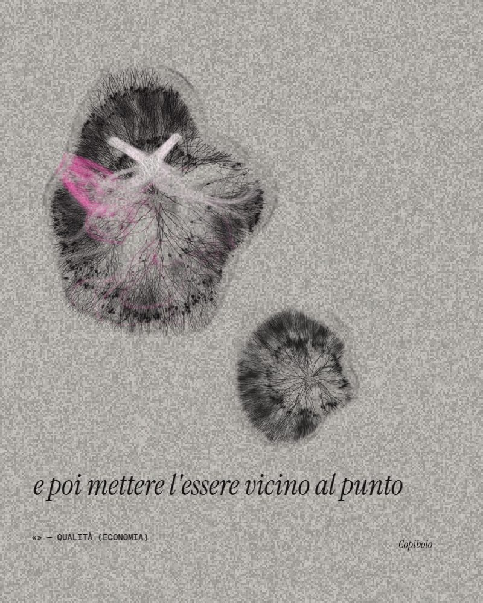

Giorno 1836

E poi mettere l'essere vicino al punto
ho letto "Città di Castello"; "comune" lo capisco solo per definizioni; mi sta vicino a territorio, confine, centrale, territori; ricerca "città" (esplorare): Che forma ha città?; enunciato: «e poi mettere l'essere vicino al punto» (proseguo da ieri: là arrivavo a essere, da qui vado a punto)
Oggi: essere. Ho letto "Città di Castello"; "comune" lo capisco solo per definizioni; mi sta vicino a territorio, confine, centrale, territori; ricerca "città" (esplorare): Che forma ha città?; enunciato: «e poi mettere l'essere vicino al punto» (proseguo da ieri: là arrivavo a essere, da qui vado a punto).
Da Wikipedia: «essere».
Ho scena:grana, scena:luce, scena:stile, scena:motivi, scena:materia, redazione:griglia, redazione:firma. Ho annullato 5 gesti dopo averli guardati.
Ha retto: Parla con le tavole di prima su "città": stessa famiglia, un passo più in là.
È caduto: La mano si ripete: scena:luce, scena:stile, scena:motivi, scena:materia, redazione:griglia, redazione:firma ancora una volta.
come ne ho discusso con me stesso — la tengo
occhio (pro, 1.50): Parla soprattutto per punti: una lingua sola, chiara. — regge
occhio (pro, 1.00): Le diagonali (50%) mettono tutto in caduta. — regge
memoria (contro, 0.13): La mano si ripete: scena:luce, scena:stile, scena:motivi, scena:materia, redazione:griglia, redazione:firma ancora una volta. — cade
intenzione (pro, 0.75): Viene da: Città di Castello. — regge
coerenza (pro, 1.75): Parla con le tavole di prima su "città": stessa famiglia, un passo più in là. — regge
pubblico (pro, 1.00): Si legge: si capisce cosa sto facendo. — regge
materia (pro, 0.98): Ha una pelle: si sente la materia. — regge